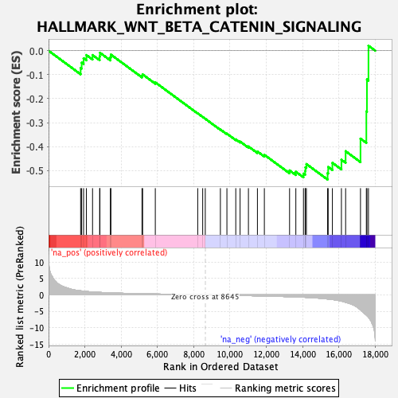
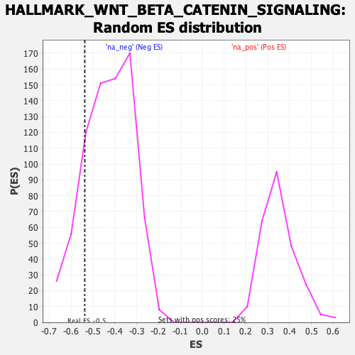

| | | Dataset | DE_genes2 |
| Phenotype | NoPhenotypeAvailable |
| Upregulated in class | na_neg |
| GeneSet | HALLMARK_WNT_BETA_CATENIN_SIGNALING |
| Enrichment Score (ES) | -0.53773665 |
| Normalized Enrichment Score (NES) | -1.2572781 |
| Nominal p-value | 0.1611185 |
| FDR q-value | 0.22260305 |
| FWER p-Value | 0.987 |
Table: GSEA Results Summary

Fig 1: Enrichment plot: HALLMARK_WNT_BETA_CATENIN_SIGNALING
Profile of the Running ES Score & Positions of GeneSet Members on the Rank Ordered List
| SYMBOL | RANK IN GENE LIST | RANK METRIC SCORE | RUNNING ES | CORE ENRICHMENT | | 1 | JAG2 | 1768 | 1.231 | -0.0719 | No |
| 2 | DKK1 | 1825 | 1.188 | -0.0496 | No |
| 3 | WNT5B | 1931 | 1.111 | -0.0316 | No |
| 4 | SKP2 | 2087 | 1.032 | -0.0180 | No |
| 5 | PSEN2 | 2425 | 0.875 | -0.0180 | No |
| 6 | HDAC11 | 2817 | 0.749 | -0.0237 | No |
| 7 | PPARD | 2832 | 0.746 | -0.0085 | No |
| 8 | NCSTN | 3408 | 0.606 | -0.0275 | No |
| 9 | MYC | 3437 | 0.600 | -0.0162 | No |
| 10 | FZD1 | 5152 | 0.339 | -0.1042 | No |
| 11 | HDAC5 | 5186 | 0.335 | -0.0989 | No |
| 12 | JAG1 | 5885 | 0.260 | -0.1321 | No |
| 13 | GNAI1 | 8223 | 0.038 | -0.2613 | No |
| 14 | HDAC2 | 8498 | 0.014 | -0.2762 | No |
| 15 | PTCH1 | 8640 | 0.000 | -0.2841 | No |
| 16 | FRAT1 | 9473 | -0.076 | -0.3287 | No |
| 17 | DVL2 | 9833 | -0.111 | -0.3463 | No |
| 18 | ADAM17 | 10321 | -0.162 | -0.3699 | No |
| 19 | AXIN1 | 10559 | -0.186 | -0.3791 | No |
| 20 | CUL1 | 11019 | -0.237 | -0.3995 | No |
| 21 | RBPJ | 11515 | -0.300 | -0.4206 | No |
| 22 | KAT2A | 11897 | -0.346 | -0.4344 | No |
| 23 | NCOR2 | 13287 | -0.566 | -0.4995 | No |
| 24 | TP53 | 13633 | -0.635 | -0.5051 | No |
| 25 | CTNNB1 | 14053 | -0.727 | -0.5128 | Yes |
| 26 | MAML1 | 14147 | -0.751 | -0.5019 | Yes |
| 27 | NUMB | 14162 | -0.755 | -0.4865 | Yes |
| 28 | CSNK1E | 14215 | -0.771 | -0.4728 | Yes |
| 29 | TCF7 | 15383 | -1.258 | -0.5107 | Yes |
| 30 | NOTCH4 | 15415 | -1.275 | -0.4851 | Yes |
| 31 | AXIN2 | 15648 | -1.409 | -0.4678 | Yes |
| 32 | DLL1 | 16146 | -1.889 | -0.4549 | Yes |
| 33 | NOTCH1 | 16377 | -2.257 | -0.4193 | Yes |
| 34 | FZD8 | 17197 | -4.569 | -0.3668 | Yes |
| 35 | LEF1 | 17520 | -6.129 | -0.2533 | Yes |
| 36 | HEY1 | 17553 | -6.298 | -0.1199 | Yes |
| 37 | CCND2 | 17637 | -6.781 | 0.0209 | Yes |
Table: GSEA details [plain text format]

Fig 2: HALLMARK_WNT_BETA_CATENIN_SIGNALING: Random ES distribution
Gene set null distribution of ES for HALLMARK_WNT_BETA_CATENIN_SIGNALING